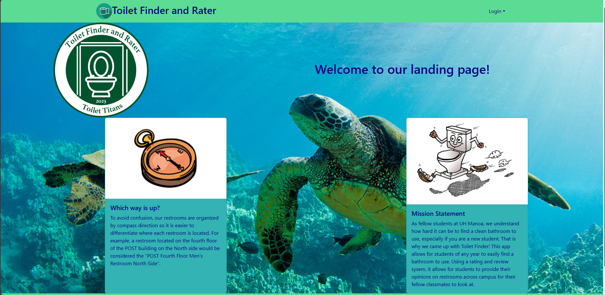

ICS314 Final Project: ToiletFinder

ToiletFinder
The goal of this project was to provide the ability for fellow UH Manoa students to be able to find sanitary restrooms throughout campus. One of the biggest hassles as students is finding restrooms that are clean enough where we are comfortable to use it. For most students now, it takes a lot of time to figure out where the best restrooms are. But with this application, students both new and old would be able to provide information on the best restrooms to use. This would include star-based reviews out of five and a text review. Putting this application to use would save a lot of time because students would no longer need to search for decent restrooms just by trial and error. This would also be extremely useful more so for the next generations of UH Manoa students because they would have access to previous reviews that former students have left.

Divide and Conquer
Since our group had four members, we were able to divide the roles relatively evenly. Two members of the team focused on the back-end, while the other two members (myself included), focused on the front-end. I mainly designed the homepage, navbar, and made bare bone pages for the backend to connect to when they were ready. Since my job was one of the more easy tasks to implement I would also help assist other teammates tasks if they needed more manpower. One of the biggest challenges for both back-end and front-end was connecting the back-end to our front-end pages. Since it was something that we had not focused on a ton previously, it was a learning experience for most of our group members. This project also taught me how coding within a group is a lot different than normal group projects in school. Normally everyone can just do their own jobs in normal school projects, but in coding projects like this, everyone needs to be on the same page and what not. If someone is not, that is when problems occur and work progress slows down.


At the End…
I thought that this project was a really big learning experience for myself and one of the toughest projects I have been assigned as an ICS student. This was the first time I took part in a group project regarding computer science so it was really eye opening on how a career in the computer science field will eventually be. I think the biggest aspects that could have been improved on was keeping procrastination in check and having a better form of communication between the group. Doing so would have allowed for more efficient problem solving and work progress. This experience also taught me how much I have to learn when it comes to software engineering. While fundamentally building a website does not seem like the most difficult task, being able to implement and fit all the pieces in the right place is actually a hard job. For example, designing and styling the homepage seemed like a pretty straightforward job, but coming up with a professional design that was unique at the same time was actually not that easy.